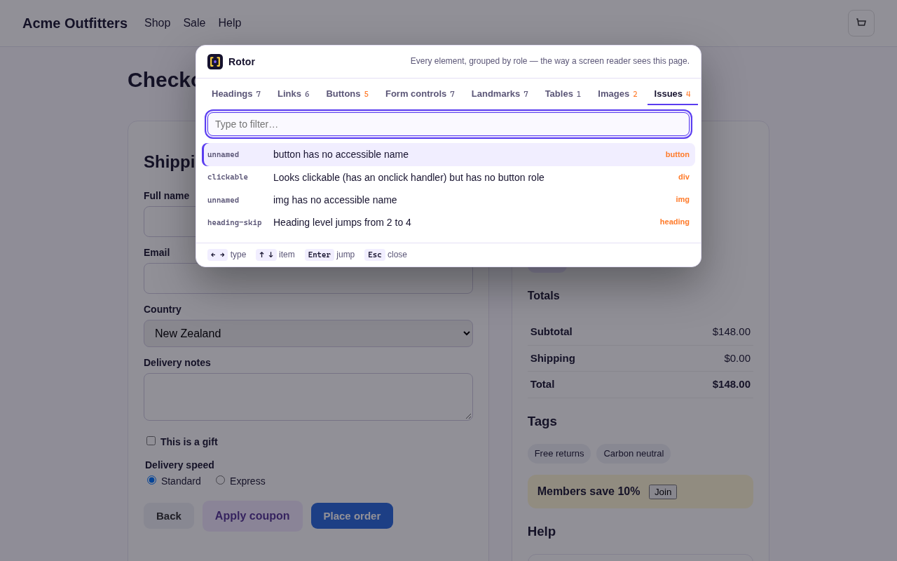
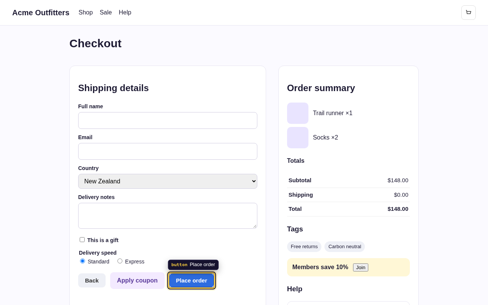
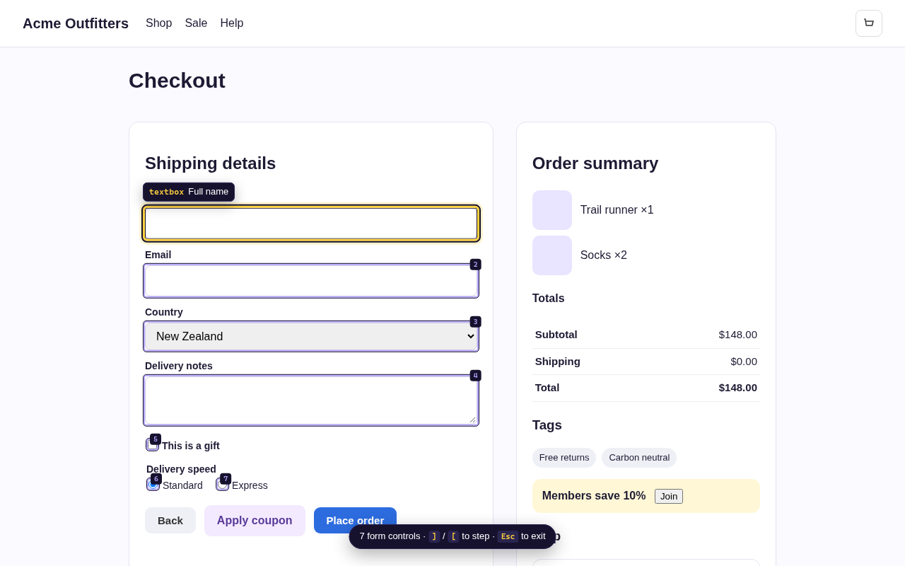
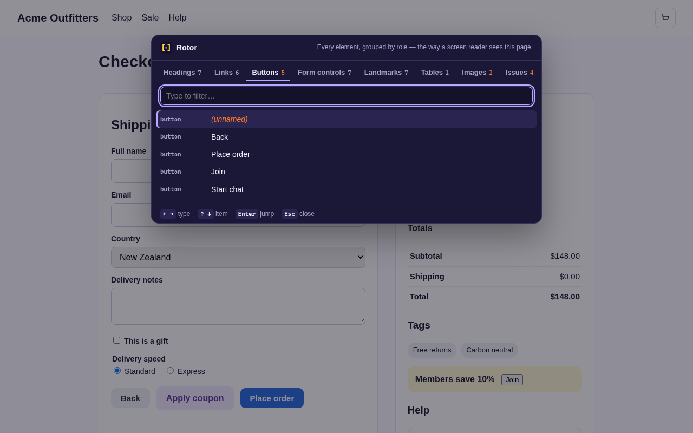
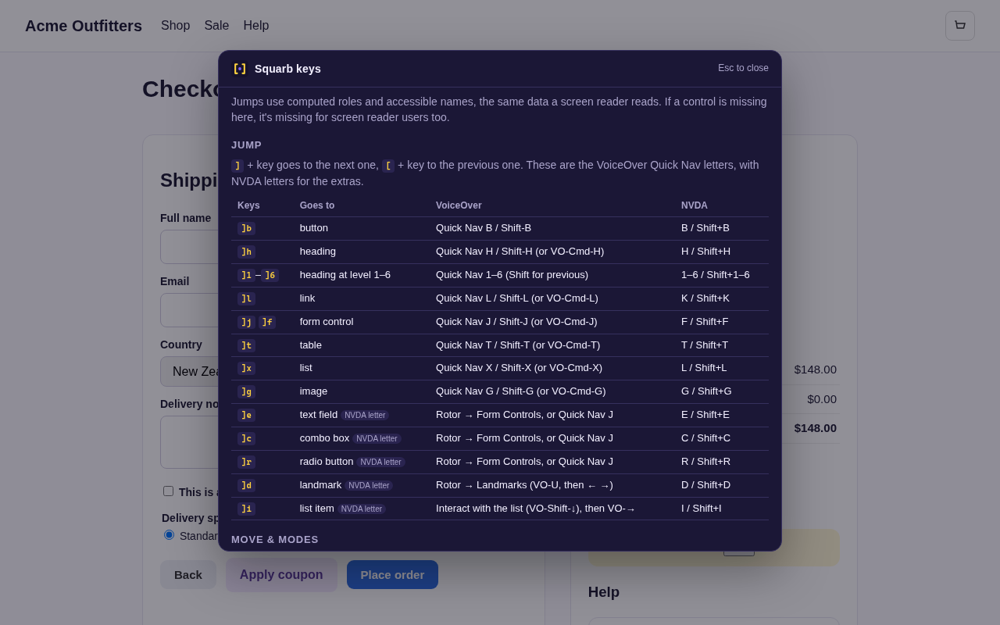

Quick-nav keys
] + key for next, [ + key for previous: buttons, headings by level, links, form fields, tables, lists, images and landmarks. ]] repeats.
Squarb is a Chrome extension for moving around web pages from the keyboard. Press ]b for the next button or [h for the previous heading. It finds things the way assistive tech does, so pages with poor markup show their gaps.
This page runs the real thing. Press ? to see every key.
Try it
The extension's code is running on this page. Keep your hands on the keyboard:
Two of these controls have problems on purpose: an icon button with no name, and a div with a click handler. Squarb points them out.
How it works
Browsers build an accessibility tree next to the DOM. Each node has a role, a name and some states. Screen readers, voice control and switch devices all read from it. Squarb rebuilds the parts it needs and navigates by them, and nothing else.
Walks the page in rendered order, including shadow DOM and same-origin iframes. Skips anything aria-hidden, inert, not rendered, or behind an open modal.
Computes each element's role and accessible name using the same rules browsers follow (via dom-accessibility-api, the engine behind Testing Library's getByRole).
Each key finds a role: b is button, h is heading, d is a landmark. Class names and tag names never count.
<button>Save</button>
<input type="submit" value="Send">
<div role="button" tabindex="0">Edit</div>Buttons. A screen reader announces all three as "button".
<div class="btn" onclick="save()">
Save
</div>Not a button to assistive tech. Squarb flags it as you jump past.
Features
] + key for next, [ + key for previous: buttons, headings by level, links, form fields, tables, lists, images and landmarks. ]] repeats.
A jump moves a highlight, not focus, so landing on a text field never starts typing into it. Enter focuses. On a button or link, a second Enter clicks it.
\ + key outlines every match and numbers it. Bare ] and [ then step through. Good for checking at a glance what a page exposes.
\\ lists every heading, link, button, field, landmark, table and image with its accessible name. Type to filter. It's modelled on VoiceOver's rotor.
Clickable divs, unnamed icon buttons, skipped heading levels and a missing main landmark are flagged, with a short explanation of why each one matters.
Web components, slotted content and same-origin iframes are walked in the order they're rendered, the order a screen reader reads them.
On a 128,000-element page, the index builds in about 60 ms on your first keypress. After that, page changes are patched in under a millisecond. Names are only computed for what's on screen.
Every key can be changed on the options page, and conflicts are caught before saving. It also stays out of the way: no keys are taken while you type, and Ctrl/⌘/Alt shortcuts always reach the page.
Keys
The letters copy screen reader quick nav: VoiceOver's where it has one, NVDA's for the rest. When you test with the real thing, your fingers already know where to go.
| Squarb | Goes to | VoiceOver (Quick Nav on) | NVDA |
|---|---|---|---|
| ]b [b | Button | B / Shift-B | B |
| ]h [h | Heading | H | H |
| ]1–]6 | Heading at level 1–6 | 1–6 | 1–6 |
| ]l | Link | L | K |
| ]j ]f | Form control | J | F |
| ]t | Table or grid | T | T |
| ]x | List | X | L |
| ]g | Image | G | G |
| ]eNVDA | Text field | Rotor → Form Controls | E |
| ]cNVDA | Combo box | Rotor → Form Controls | C |
| ]rNVDA | Radio button | Rotor → Form Controls | R |
| ]dNVDA | Landmark | Rotor → Landmarks | D |
| ]iNVDA | List item | Interact with the list | I |
| \\ | Rotor / element list | VO-U | NVDA+F7 |
VoiceOver: Cmd-F5 turns it on, and VO-Q toggles single-key Quick Nav (VO is Control-Option or Caps Lock). NVDA uses single letters in browse mode by default. With both, Shift + letter goes to the previous one.
For developers
If ]b can't reach a control on your site, a screen reader user probably can't either. Squarb tells you why, briefly and without scolding.
onclick, a tabindex or a pointer cursor, but no role. Usually the fix is a real <button>.aria-label.main landmark, images without alt, and cross-origin frames that couldn't be checked.
In action




Install
Squarb isn't in the Chrome Web Store yet. You can build it from source in about a minute.
chrome://extensions and turn on Developer mode.dist/ folder.# Node 20+
npm install
npm run brand # icons
npm run build # → dist/
# optional
npm test
npm run test:e2e
npm run bench